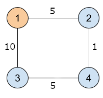
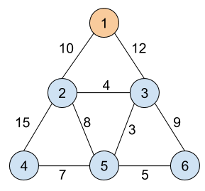

The Apricot Rules company just installed a critical security update on its network. The network has one source computer, and all other computers in the network are connected to the source computer via a sequence of one or more direct bidirectional connections.
This kind of update propagates itself: once a computer receives the update for the first time, that computer immediately begins to transmit the update to all of the computers that are directly connected to it. Each of the direct connections has a latency value: the number of seconds needed for that connection to transmit the update (which is the same in either direction). Therefore, the update does not spread to all computers instantly.
The Apricot Rules engineers do not know any of these latency values, but they know that they are all positive integers. They would like your help in figuring out what these latency values could be, based on how they saw the update spread in a recent experiment.
The Apricot Rules engineers installed the update only on the source computer and then waited for it to propagate throughout the system until every computer was updated. They recorded some information about how the update spread. Specifically, for every computer K other than the source computer, you know exactly one of two things.
Notice that multiple computers may have received the update at the exact same time.
You are required to compute a latency in seconds for each of the direct connections between two computers. Each latency value must be a positive integer no greater than 106. The set of latencies that you provide must be consistent with all of the known information. It is guaranteed that there is at least one consistent way to assign latencies.
The first line of the input gives the number of test cases, T. T test cases follow. Each case begins with one line containing two integers C and D: the number of computers and the number of direct connections, respectively. The computers are numbered from 1 to C, with computer 1 being the source computer.
The next line contains C-1 integers X2, X3, ..., XC. A positive Xi value indicates that computer i received the update Xi seconds after computer 1. A negative Xi value indicates that -Xi other computers received the update strictly before computer i; this value includes the source computer.
After that, there are D more lines that represent the D direct connections in the network. The i-th of these lines contains two integers Ui and Vi, indicating that computers Ui and Vi are directly connected to each other.
For each test case, output one line containing Case #x: y1 y2 ...
yD, where x is the test case number (starting from 1) and
yi is a positive integer not more than 106 representing the
latency, in seconds, assigned to the i-th direct connection.
Time limit: 20 seconds per test set.
Memory limit: 1GB.
1 ≤ T ≤ 100.
2 ≤ C ≤ 100.
C - 1 ≤ D ≤ 1000.
1 ≤ Ui < Vi ≤ C, for all i.
(Ui, Vi) ≠ (Uj, Vj),
for all i ≠ j.
All computers (except the source computer) are connected to the source computer through a sequence
of one or more direct connections.
There exists at least one way of assigning latency values that is consistent with the input.
-C < Xi < 0, for all i.
(You get the second type of information for all computers.)
-C < Xi ≤ 1000, for all i.
Xi ≠ 0, for all i.
3 4 4 -1 -3 -2 1 2 1 3 2 4 3 4 4 4 -1 -1 -1 1 4 1 2 1 3 2 3 3 2 -2 -1 2 3 1 3
Case #1: 5 10 1 5 Case #2: 2020 2020 2020 2020 Case #3: 1000000 1000000
In Sample Case #1, the following picture represents the computer network that is illustrated by the sample output. The i-th computer is represented by the circle with the label i. A line linking two circles represents a direct connection. The number on each line represents the latency of the direct connection.

In Sample Case #2, the first three connections need to have the same latency, while the fourth can have any valid latency. Note that -2, 0, 1000001, and 3.14 are examples of invalid latencies.
In Sample Case #3, remember that the connections are bidirectional, and so the update can travel from computer 3 to computer 2. Any two valid latency values work here.
The following case could not appear in Test Set 1, but could appear in Test Set 2:
1 6 9 10 -2 -5 15 20 1 2 1 3 2 3 2 4 2 5 3 5 3 6 4 5 5 6
One of the correct outputs is 10 12 4 15 8 3 9 7 5, as illustrated by the picture
below.
